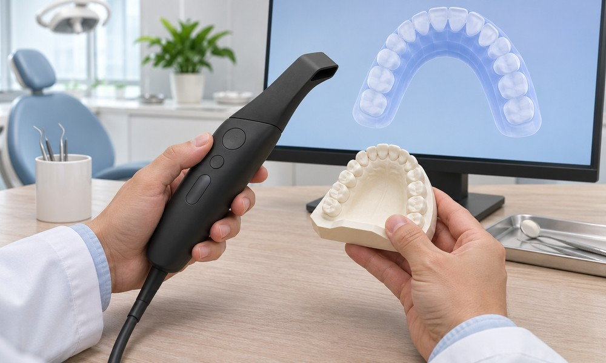
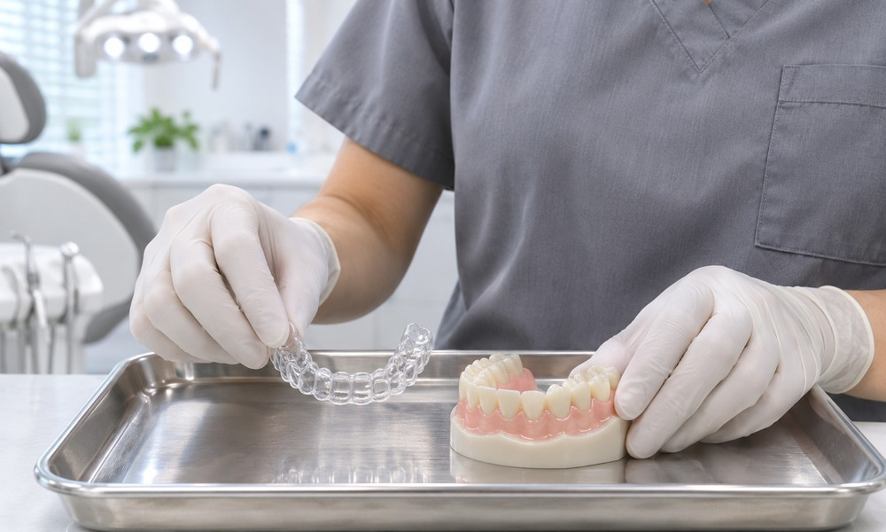
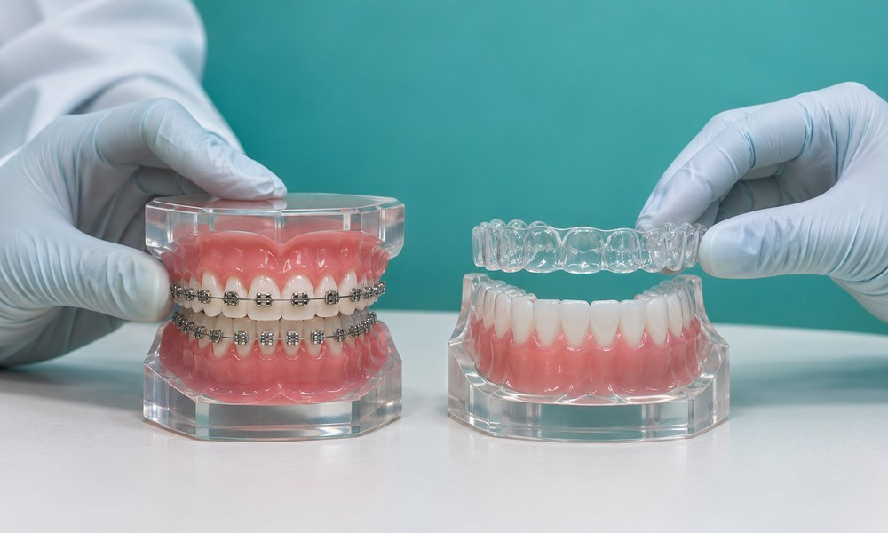
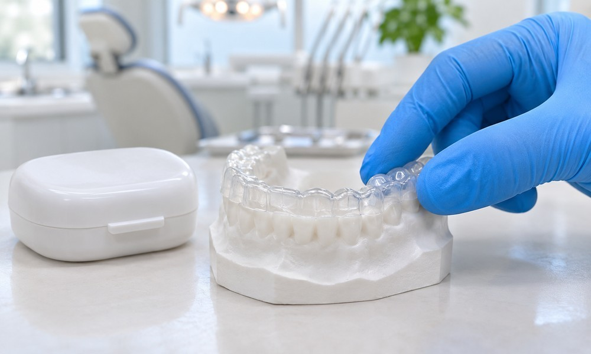
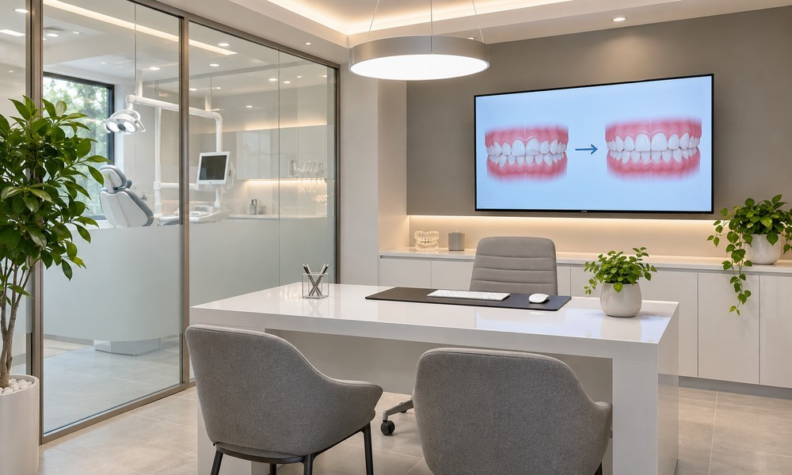
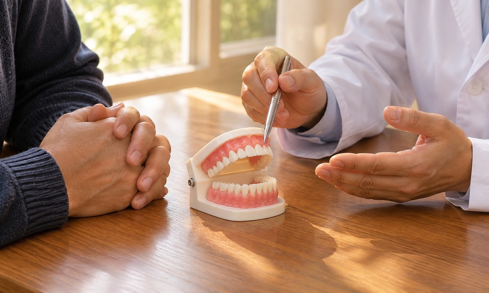
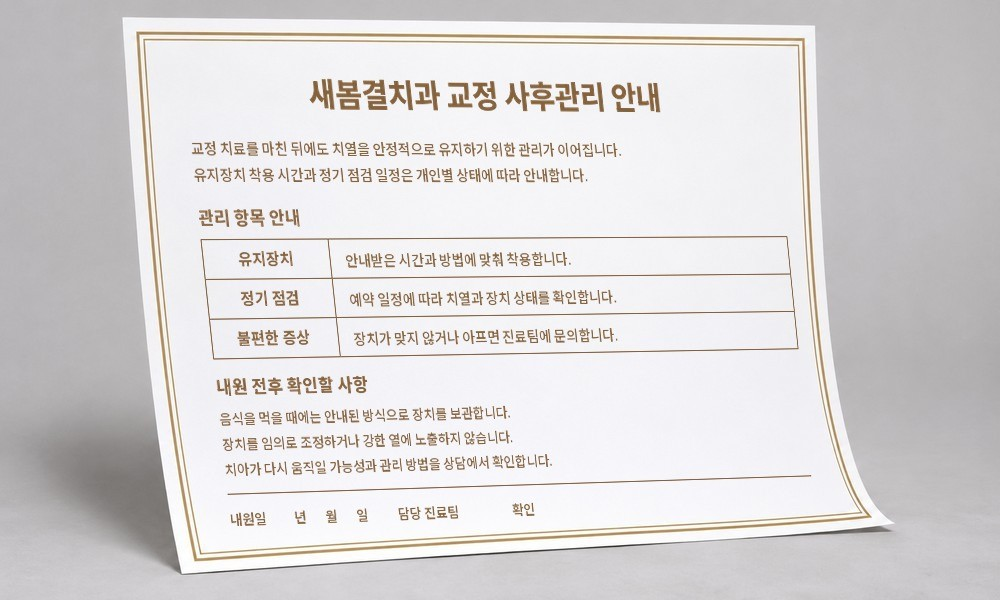

성인 치아교정,
목표 설정이
중요합니다.
성인 교정은 치아 배열뿐 아니라 잇몸과 기존 보철물, 교합 상태까지 함께 확인해야 합니다.

개인의 니즈를 고려하여
성인 치아교정의
목표 설정을 합니다.
치료가 필요한 부위와 외관·기능 중 우선할 목표를 먼저 정리하여, 현재 치아 조건에 맞는 장치와 필요한 치료 기간을 검토합니다.
성인 교정은
기존 교합을 고려한
체계적인 교정 치료 계획이
중요합니다.
성인 교정은 교합과 잇몸 상태, 치아 이동 범위를 함께 평가한 뒤 가능한 계획을 세워야 하므로 원하는 변화와 기능상의 목표를 먼저 정리합니다.

왜 새봄결치과
성인 통합교정일까요?

01.
세심한 치아교정을 위해
소수 예약제로
진료합니다.
교정 상담과 진료에 필요한 시간을 확보할 수 있도록 예약 인원을 조정합니다. 처음 진단에서 치열과 맞물림을 설명하고, 계획한 방향을 진료 과정에서 다시 확인합니다. 치료 기간 동안 질문과 불편을 살피며 필요한 내용을 빠뜨리지 않고 안내합니다.
02.
디지털 진단 시스템으로
정확하고 정밀하게
진단합니다.
교정 진단은 치아 배열만 보지 않고 턱뼈와 잇몸 상태, 교합을 함께 확인하는 과정입니다. 필요한 경우 3차원 CT와 보조 검사 자료를 참고해 정보를 모읍니다. 여러 자료를 비교해 치아 이동에 필요한 조건과 주의할 부분을 살펴봅니다.


03.
분과별 의료진이 있어
협진 진료가 가능합니다.
교정은 치료 기간이 길어 그동안의 충치와 잇몸 관리도 함께 계획해야 합니다. 교정 담당 의료진과 다른 진료 분야가 검사 자료를 공유하며, 치료 중 충치 처치나 발치가 필요할 때도 순서를 조정합니다. 배열을 바꾸는 과정과 구강 건강 관리가 따로 진행되지 않도록 확인합니다.
04.
환자 맞춤형 서비스와
합리적인 분납제를
시행합니다.
치료 전후의 변화를 함께 확인하고 장치를 뗀 뒤에도 치열이 안정되도록 유지 관리를 이어갑니다. 상담 단계에서 비용과 납부 방법도 차분히 안내합니다.


05.
사후 관리 보증 제도를
시행하고 있습니다.
교정 장치를 제거한 뒤에도 치열이 안정되도록 유지 장치와 정기 검진이 필요합니다. 치료 전부터 이후의 관리 기준과 점검 일정을 안내하고, 불편이나 배열 변화를 확인합니다. 같은 진료팀에서 기록을 이어 보며 치료 중 설명했던 내용을 사후 관리에도 반영합니다.
새봄결치과
치아교정 Q&A
의료진이 자주 받는 질문을 항목별로 설명합니다.
돌출되거나 사이가 벌어진 치열은 교정 계획에 따라 정돈할 수 있습니다. 배열이 달라지면 얼굴선의 균형과 인상도 한층 자연스러워질 수 있습니다.
교정으로 치아가 이동한다고 해서 잇몸이 반드시 약해지는 것은 아닙니다. 배열이 정리되면 닦기 어려웠던 부위를 관리하기 쉬워질 수 있습니다. 다만 장치 주변에 오염이 쌓이면 잇몸에 염증이 생길 수 있어, 치료 중에는 칫솔질 방법을 점검하고 정기 검진에서 치아와 잇몸 상태를 함께 확인해야 합니다.
교정에서 발치 여부는 치열과 공간, 잇몸 상태를 종합해 결정합니다. 비발치가 가능한 경우도 있지만 개인차가 크므로 진단 자료를 확인한 뒤 치료 방법과 순서를 상담합니다.
미루었던 교정,
성인 통합교정
성인 교정은 나이보다 현재 치열과 잇몸 상태를 먼저 살피는 것이 중요합니다. 배열과 교합을 함께 조정하면 구강 관리와 외관 개선을 함께 계획할 수 있습니다.